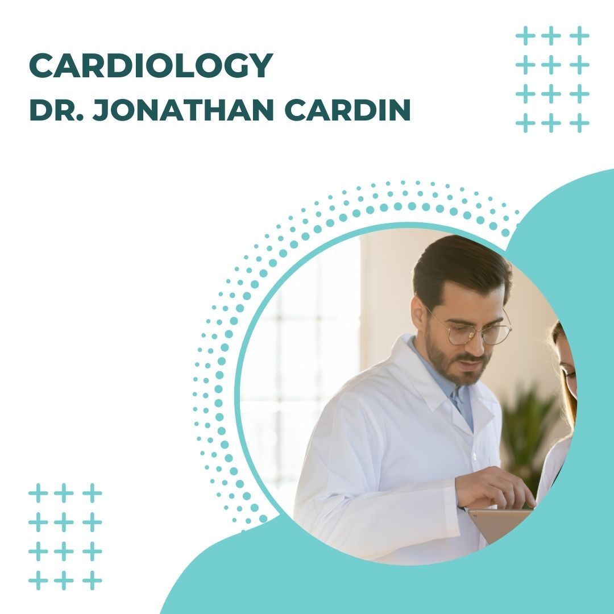
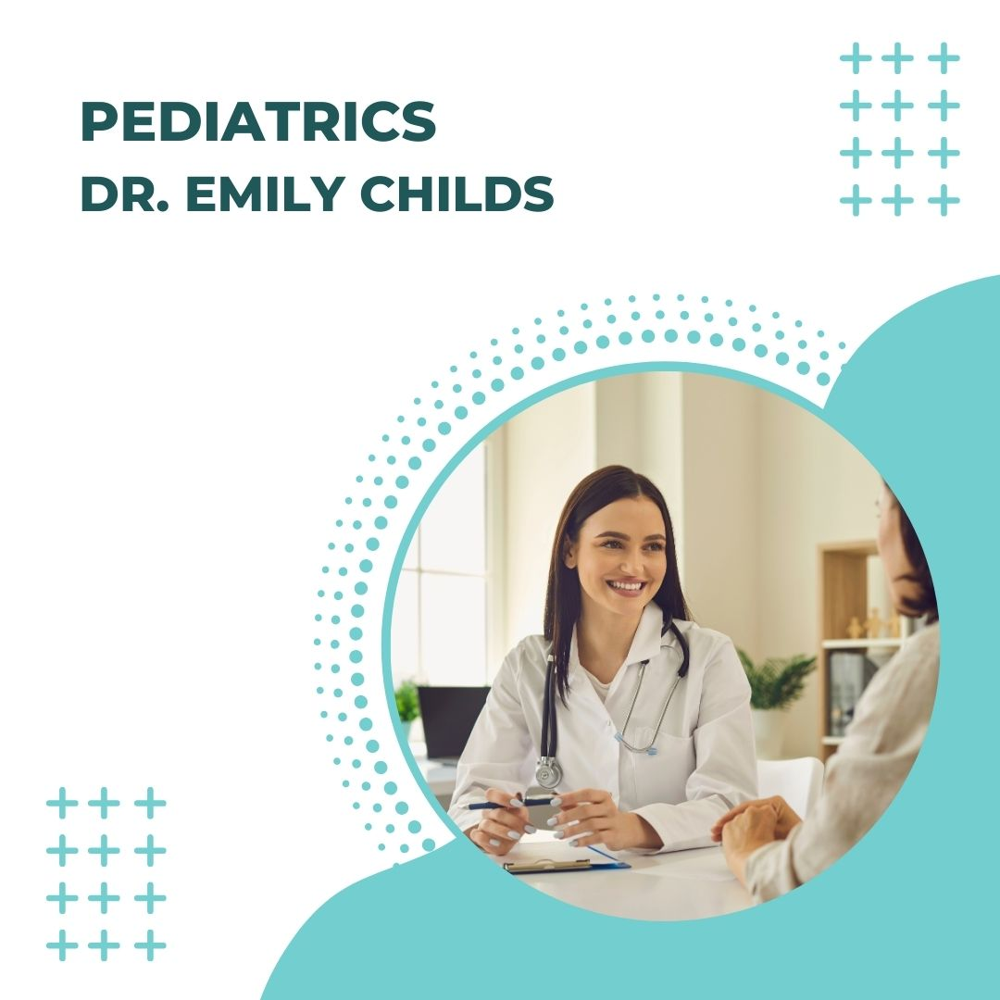
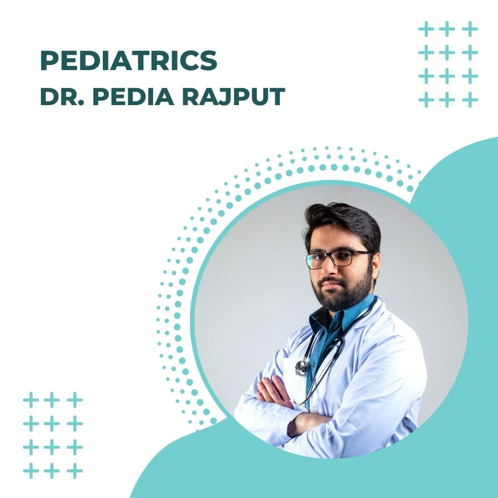
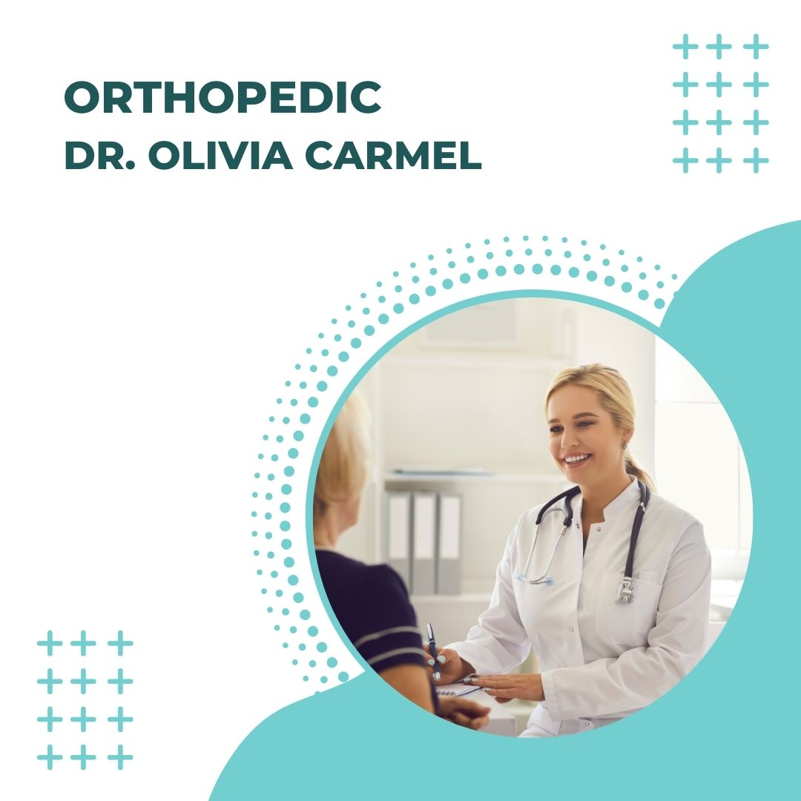
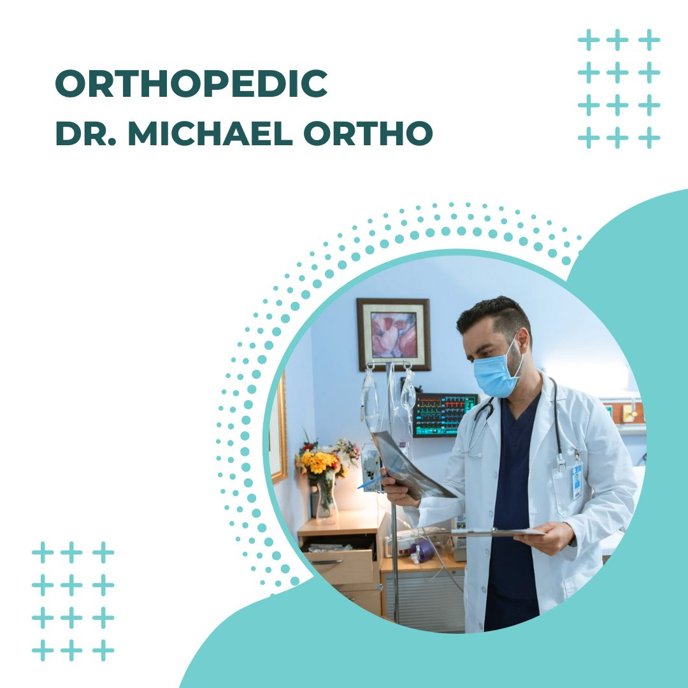

Doctors and Their Expertise
Dr.Hartwell
Expertise: A renowned cardiologist with over 15 years of experience in diagnosing and treating complex heart conditions. She specializes in interventional cardiology, including angioplasty and stent placement.
Dr.Cardin
Expertise: An expert in heart rhythm disorders, Dr. Cardin focuses on arrhythmias and the implantation of pacemakers. His research on atrial fibrillation has been widely recognized.
Dr.Childs
Expertise: Pediatrician- A compassionate pediatrician known for her expertise in child development and preventive care. Dr. Childs has a special interest in pediatric nutrition and early childhood vaccinations.
Dr.Pedia
Expertise: Pediatrician- Specializing in pediatric infectious diseases, Dr. Pedia is skilled in treating rare and complex infections in children. He is also involved in research on vaccine development.
Dr.Olivia
Expertise: Orthopedic Surgeon- An experienced orthopedic surgeon, Dr. Olivia specializes in joint replacement and minimally invasive procedures for treating fractures. She is highly regarded for her work in sports medicine.
Dr.Ortho
Expertise: Orthopedic Surgeon- Dr. Ortho is an orthopedic specialist focusing on spine surgery and the treatment of degenerative disc diseases. His innovative approach to spinal fusion has improved outcomes for many patients.